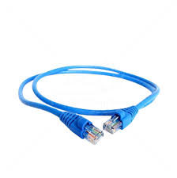

Descripcion de cada componente Pasivo
RJ45
El RJ45 (Registered Jack 45) es un tipo de conector de 8 pines utilizado principalmente para cables de red Ethernet en redes de datos. Es el estándar para la mayoría de las conexiones de red en entornos LAN (Redes de Área Local).
Jacks o Keystone
Los jacks o keystone son módulos intercambiables que se instalan en paneles de parcheo o cajas de pared para proporcionar puntos de conexión para cables de red. Pueden ser para diferentes tipos de conectores, incluyendo RJ45, y otros como HDMI, USB, etc.

Cable UTP
El cable UTP es un tipo de cable de par trenzado sin blindaje que se utiliza para la transmisión de datos en redes de datos y telecomunicaciones. Está compuesto por pares de cables trenzados para reducir la interferencia electromagnética.
Patch Panel
Un patch panel es un dispositivo de panel de conexiones que centraliza y organiza cables de red en un lugar único. Facilita la gestión y el mantenimiento de las conexiones de red.
Patch Cord
Un patch cord (o cable de parcheo) es un cable corto utilizado para conectar dispositivos a un patch panel o a un dispositivo de red como un switch o router. Generalmente se usa para conexiones temporales o para conectar equipos dentro de un rack o sala de servidores.
Fibra Óptica
La fibra óptica es un tipo de cable que transmite datos usando señales de luz a través de hilos de vidrio o plástico. Ofrece alta velocidad de transmisión y gran ancho de banda.
Canaletas
Las canaletas son estructuras de gestión de cables que organizan y protegen los cables de red y otros cables eléctricos. Se instalan en paredes, techos o pisos para mantener los cables ordenados y accesibles.


{kind=link}
{kind=link}
{kind=link}
{kind=link}